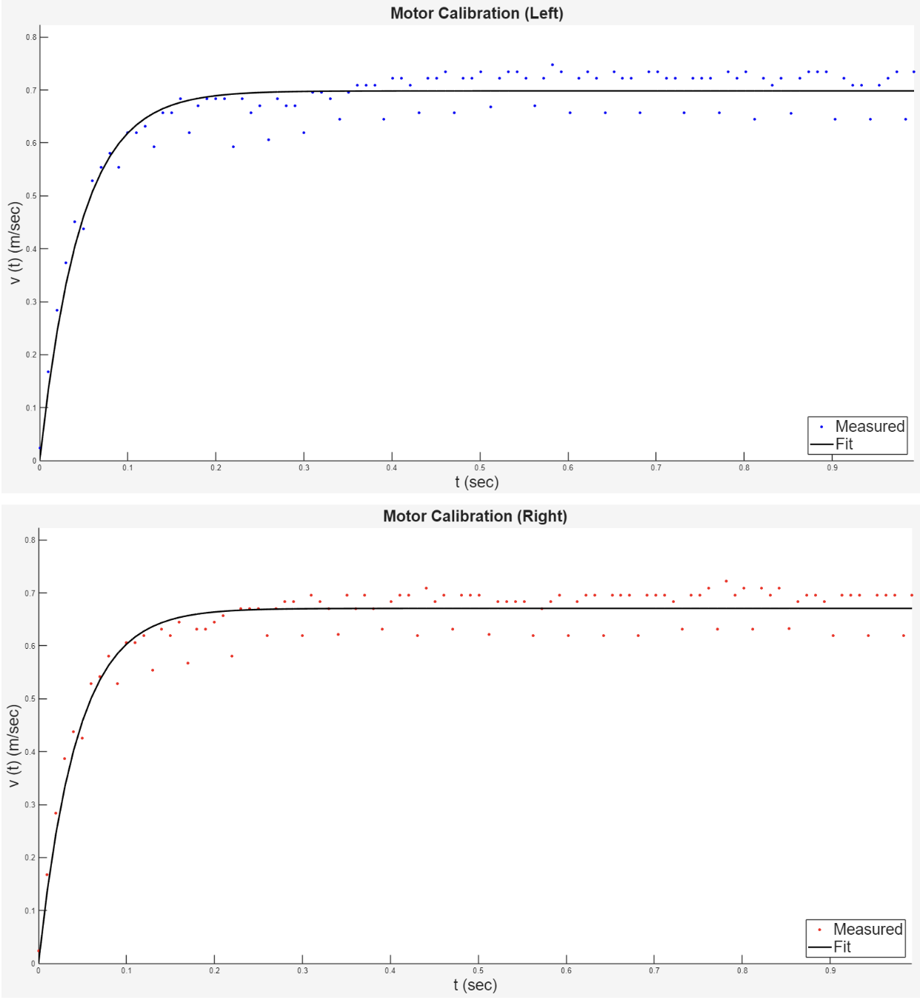
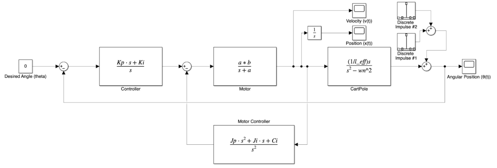
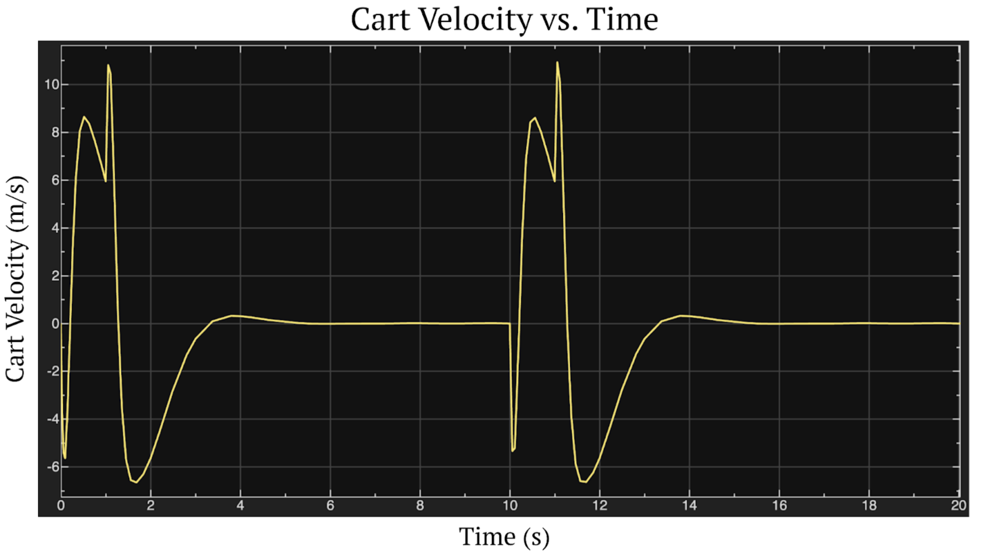

Cascaded Control of an Inverted Pendulum
Modeling Rocky as a balancing system and utilizing experimental calibration data to design and validate closed-loop controllers for disturbance rejection.
View Full Report →Autonomous Stabilization
This project involves the mathematical modeling and closed-loop control of a two-wheeled inverted pendulum robot. The primary objective was to design a robust architecture capable of remaining upright and rejecting severe external disturbances.
By estimating the physical motor constants, natural frequency, and effective pendulum length directly from measured hardware data, these empirical parameters were utilized to construct accurate transfer function models and engineer multi-pole control systems in MATLAB and Simulink.
Parameter Estimation
We leveraged the MATLAB function load_motor_data() and fitted an exponential curve to the velocity data of both motors ramping up.
Motor & Pendulum Characterization
-
Motor Constants
The motor ramp-up behavior was characterized using the following fit curve equation:
$$ v(t) = c(1 - e^{-\alpha t}) $$We estimated final values of cL = 0.6983 m/s, τL = 0.0461, αL = 21.7028, and a steady-state gain of βL = 0.0023 for the left motor. The right motor yielded cR = 0.6707 m/s, τR = 0.0436, αR = 22.9444, and βR = 0.0022.
-
Natural Frequency
Positive peaks were detected from the shifted pendulum response to estimate the damped oscillation frequency. Using the non-linear fitted data, the final natural frequency was ωn = 4.3855 rad/s, establishing an effective pendulum length of leff = 0.5101 m.

Control Architecture
Designing both 3-pole and 5-pole closed-loop feedback systems for optimal balance and spatial regulation.

3-Pole Initial System
To return Rocky to a steady angle rapidly, we targeted an underdamped response with a damping ratio of 0.9. This required placing the third pole carefully to ensure the constraint that the average of the real components equaled -α/3 was satisfied, ultimately requiring theoretical gains of Kp = 791.4680 and Ki = 5336.6.
5-Pole Cascaded System
To combat steady-state error accumulation and increase positional control, the system was upgraded to a 5-pole cascaded architecture. This structure adds a motor feedback controller, J(s), in the lower feedback path to regulate cart velocity and position while maintaining stable angle control.
Simulated Behavior & Results
Discrete disturbance impulses were applied at the output to test how the respective systems responded to sudden force.
3-Pole Runaway Drift
When simulating a disturbance on the 3-pole system, the body angle recovered, but the cart increased its velocity by ~32.5 m/s in a step behavior. Without velocity regulation, the cart position ran away from its initial position indefinitely.
5-Pole Stability
The implementation of the 5-pole nested architecture successfully allowed the system to recover from disturbances without the runaway position behavior seen in the 3-pole case. The system keeps body angle, velocity, and position anchored at 0.
Final Outcome
Whenever a distinct disturbance struck the 5-pole system, Rocky was able to successfully rebalance, bringing its velocity, position, and angle entirely back to baseline in a maximum of ~6 seconds.
